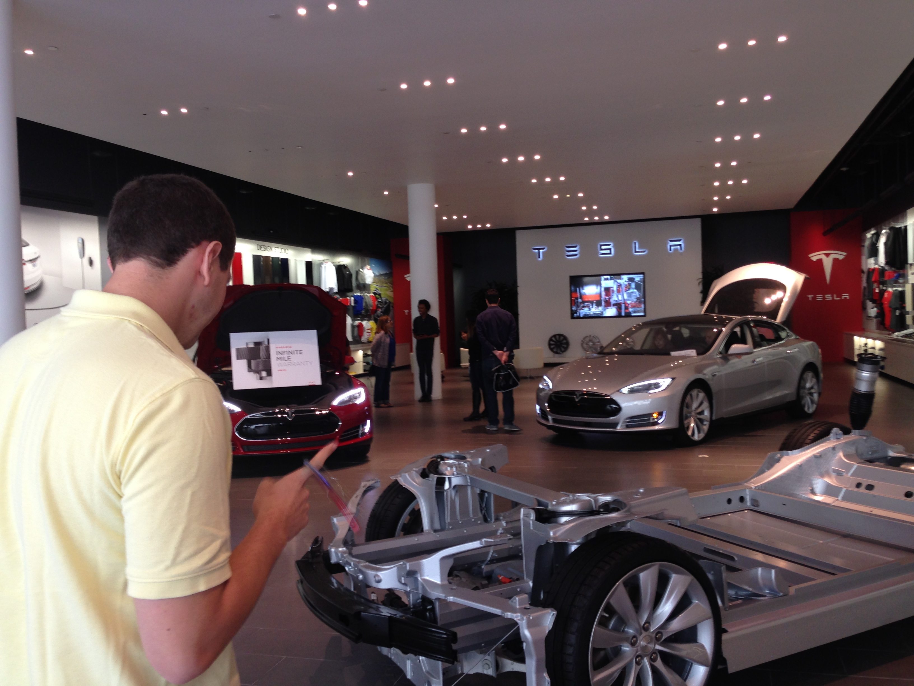
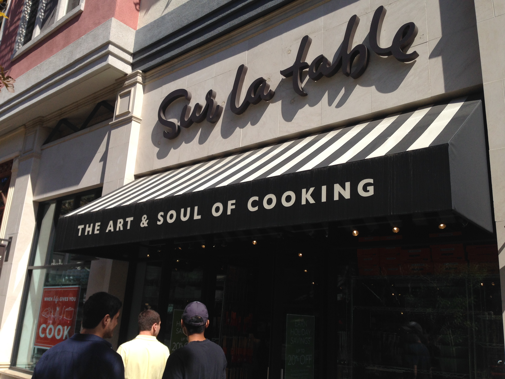
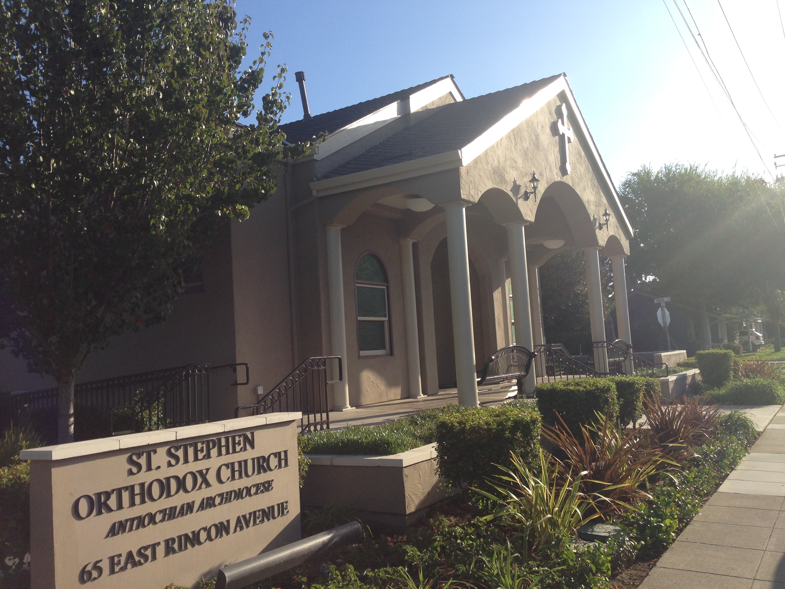

Shopping in Suburbia
As if the shops in San Francisco weren't fancy enough, we just had to visit Santana Row and the Westfield Mall, less than one week later.
Now, when my roommate recommended we go to Santana Row, I looked it up, just to see what we might be getting into. What I found was not quite shocking, but certainly surprising.
For every one shop I recognized, there were five or six more that I had never heard of, places with rich sounding names: LOFT, Free People, Gallery 85, … "lucy"! There was even a bona fide Tesla store sporting merchandise and models inside with test drives right around the corner!
It took us about 20 minutes of travel time by bus, which was fortunate, because there was absolutely no parking anywhere. We arrived around 13:00 and were greeted by an already furious wave of suburbanite shoppers. Dazed and confused by all the obvious wealth around us, we were drawn to the bright lights and futuristic typesetting of the Tesla store, making it our first stop.
And what a stop it was …

Roommate Nick eyes the inventory.
The sales people were all friendly and exceptionally knowledgeable. It seemed like they regularly held their own (and often embarrased) crowds of roaming engineers debating the technology amongst themselves. And they were pretty; let's not forget that fact when I admit that I was talked into buying a $25 travel mug.
(To be fair, it is an awesome mug, and has been serving my twice daily tea drips admirably … but still.)
After the Tesla store, nothing could really compare. Oh, all the shops looked wonderful, there were plenty of places where I could blow my first paycheck on a single item of clothing, a genuine leather messenger bag, or an espresso machine—for those nights when you need just a little more energy.

I did end up walking out of here with some of the nicest wooden spoons I've ever held.
Oh, and the food. Oh there were so many options, and everyone had outdoor seating, and everything looked so good! We walked around the whole complex (by which point we were pretty hungry), and engaged in a spirited debate about the relative merits of the Brazilian Steakhouse against the Indian Restaurant; the Traditional French Parlor defeating the Irish Pub. I honestly would have (and hopefully will) eaten at every one of them, but we could only have one brunch, so we made our way to the French Outpost that first caught our collective eye.
It was a good choice.
We started with Truffle Parmigiano Fries, served in a tall cylindrical dish. They were the best damn cheese fries I've ever had, hands down. The apetizer serving as a tantalizing taste of greatness to come, we tried to continue our conversation as nonchalantly as possible, but we could hardly hide the now carnivorous anticipation of a school of sharks, bearing down on a feeding frenzy.

I was barely able to fight off my exhilarated apetite long enough to take this picture
And then—in one fell swoop—all our patience was rewarded in one fell swoop. (Well, Nick's plate was a minute or two late, but Jack, Jonah, and I would not let that dampen our enthusiasm). What you see up front is French Dip Au Jus, with extra dip, creamy horseradish, good old Heinz ketchup, plenty of extra fries, and even a few leaves of "lettuce". I can harldy begin to describe the ecstasy that ensued, except to say that it was the best meal I have had in quite a long time, maybe even in quite a few years. The flavors were perfectly balanced and strong. The food was just the right temperature, and drink (a Roy Rodgers, don't worry) was blended to perfection. It was glorious.
Now, twice in one day we had experienced the extraordinary at Santana Row, so we left that place with fond memories, and crossed the street to the adjacent indoor mall, the Westfield.
The Westfield Mall is an unfortunate story, now for its own flaws, for it had none, but because it was overshadowed by its wealthy cousins on Santana Row. The mall itself boasted a casting call of opulence: Apple, Microsoft, and Bose; Armani, Coach, and Nordstrom. We spent almost as much time wondering at how much everything cost as actually walking through the place. But by then, we had already been spoiled. I could describe the mall in more depth, but it would merely pale in comparison to that outdoor complex next door.
After another hour or so, I was finished, I bade my companions farewell to make one final journey of my own. I caught a bus for a 30-minute ride to the South, looking for a Sign. After spending a day in a Capitalist Oasis, I returned to my roots, the Kingdom of Heaven: Saint Stephen Orthodox Church.
I had finally found home.
